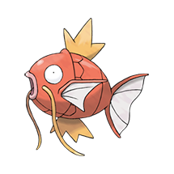

Magikarp

Tipo: Agua
Descripción:
Magikarp presenta una musculatura subdesarrollada y un metabolismo acuático de baja eficiencia, lo que limita su capacidad de desplazamiento activo. Su organismo prioriza la resistencia osmótica y la supervivencia en aguas turbulentas, manteniendo un sistema circulatorio capaz de soportar cambios bruscos de presión. En reposo, reduce su actividad metabólica al mínimo, conservando energía para periodos de mayor estrés ambiental.
Evoluciones

Gyrados